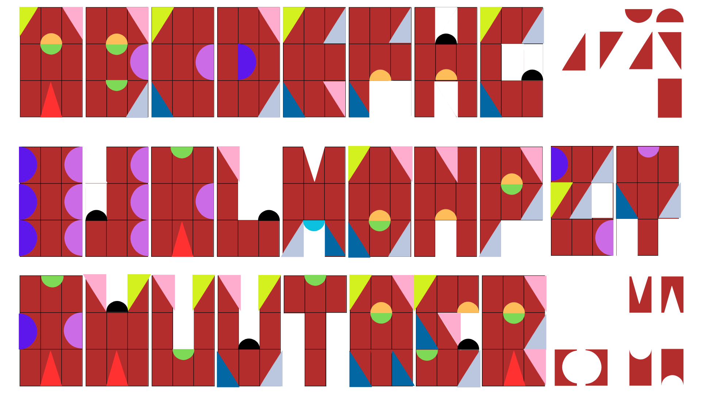

×
About
Typocut is an interactive tool that mixes collages, typography and randomness.
Born from a passion for collage and creative coding, it produces typographic designs with noise, randomized image masking and configurable gradients.
Each letter is a canvas, randomly cropped from configurable gradients or uploaded images, with adjustable size & noise and style parameters.
Letters are built using strict 3x3 grid with primitives (rectange, triangle, cut-out rectangles, half-circles) that are flipped & rotated and distorted with noise, combining pixel and parametric fonts feel.
More details available at
mixedmeanings.lol/code/typo-cut
